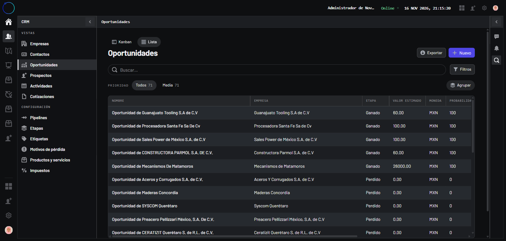
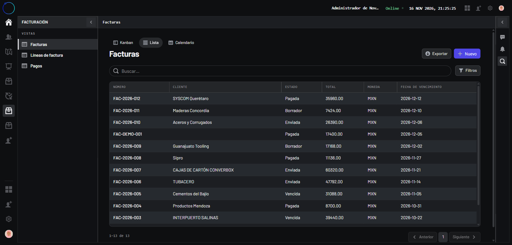
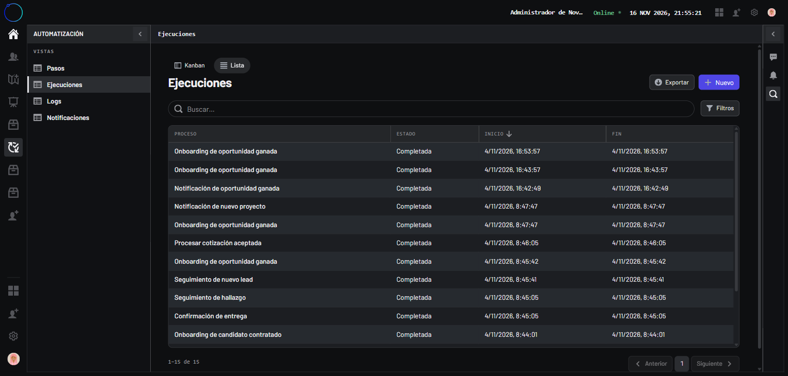

Especificaciones de la plataforma Novvus: capas, módulos, modelo de datos, integración por eventos, seguridad y el proceso seguido para construir y documentar el sistema.
Producto
Novvus Core 0.3.72
Versión
1.0
Fecha
18 de noviembre de 2026
Audiencia
Equipo técnico
Módulos
8 aplicaciones
Base de datos
PostgreSQL 16
Novvus · Documentación técnicaUso interno
CONTENIDO
Índice
Trece capítulos con diagramas, tablas de referencia y evidencia de funcionamiento.
Resumen ejecutivo
—Síntesis del proyecto y resultados
1. Objetivo y alcance
1.1Problema y propuesta
1.2Alcance entregado
1.3Fuera de alcance
2. Arquitectura
2.1Vista por capas
2.2Decisiones de diseño
2.3Flujo de una petición
2.4Límites de responsabilidad
2.5Riesgos y mitigaciones
3. Tecnologías y herramientas
3.1Plataforma
3.2Módulos
3.3Herramientas de documentación
3.4Reproducibilidad
3.5Alternativas evaluadas
4. Catálogo de módulos
4.1Inventario funcional
4.2Puertos y contenedores
4.3Permisos y dependencias
4.4Alta de un módulo
5. Modelo de datos
5.1Entidades principales
5.2Esquemas por módulo
5.3Convenciones
6. Integración por eventos
6.1Catálogo de eventos
6.2Idempotencia
6.3Orquestación
7. Seguridad
7.1Autenticación
7.2Autorización
7.3Aislamiento multiempresa
7.4Comunicación entre servicios
7.5Auditoría
8. Flujo funcional
8.1Recorrido principal
8.2Evidencia visual
8.3Qué demuestra la evidencia
8.4Reproducir el recorrido
8.5Roles en el recorrido
9. Despliegue y operación
9.1Topología
9.2Volúmenes y respaldos
9.3Salud y registros
9.4Comandos de operación
10. Proceso de construcción
10.1Fases
10.2Correcciones aplicadas
10.3Datos de demostración
10.4Lecciones del proceso
10.5Automatización de la entrega
11. Pruebas y verificación
11.1Verificaciones técnicas
11.2Volumen de datos
11.3Alcance de las pruebas
11.4Matriz de aceptación
12. Limitaciones y futuro
12.1Limitaciones conocidas
12.2Siguientes pasos
12.3Criterios para producción
13. Anexos
13.1Estructura del paquete
13.2Credenciales y direcciones
13.3Referencias
00
Resumen ejecutivo
Qué se construyó, cómo funciona y qué se verificó.
Novvus es una suite empresarial modular desplegada sobre contenedores. El sistema entregado comprende la plataforma (capa web, kernel de servicios y base de datos) y ocho módulos de negocio que cubren el ciclo completo de una empresa: prospección comercial, ejecución de proyectos, operación logística, control de calidad, facturación y cobranza, inventario, talento humano y automatización de procesos.
Módulos
8
CRM, Proyectos, Reclutamiento, Logística, Auditorías, Facturación, Inventario y Automatización.
Tablas
116
38 en el esquema core y 78 distribuidas en los ocho esquemas mod_*.
Eventos
16
Eventos de negocio publicados y consumidos entre módulos, sin acoplamiento de tablas.
Hallazgos principales
Arquitectura desacoplada. El kernel actúa como único punto de entrada: autentica, autoriza, enruta y firma las llamadas a los módulos. Ningún módulo queda expuesto directamente al navegador.
Módulos como unidades autónomas. Cada módulo declara sus modelos, vistas, permisos y eventos con el SDK de Novvus; el SDK genera la API REST y aplica el aislamiento por organización.
Integración por eventos, no por base de datos. Un módulo nunca escribe en las tablas de otro: publica un hecho y los demás reaccionan mediante su API pública.
Operación verificada. Los ocho módulos responden a su verificación de salud, las nueve vistas principales cargan con datos de demostración y las integraciones producen registros reales entre módulos.
Entregables
Entregable
Contenido
Sistema en ejecución
Plataforma y ocho módulos en contenedores, accesibles en http://localhost:8077.
Manual de usuario (PDF)
19 capturas y 27 figuras; recorrido por módulos y flujos guiados.
Reporte técnico (PDF)
Este documento: arquitectura, modelo de datos, seguridad, despliegue y pruebas.
Código fuente
SDK, módulos personalizados, migraciones y configuración de despliegue.
Diagramas vectoriales
Ocho diagramas SVG generados con Mermaid 11.
Respaldos de base de datos
Volcados de PostgreSQL listos para restaurar el ambiente.
i
Qué demuestra este documento Que la suite no es una maqueta: los ocho módulos operan sobre una base real, se comunican por eventos y producen registros verificables. Las secciones siguientes explican cómo está construida y qué se comprobó.
01
Objetivo y alcance
El problema que resuelve la plataforma y los límites del entregable.
1.1 Problema y propuesta
Una empresa mediana típica opera con una herramienta para vender, otra para ejecutar proyectos, una hoja de cálculo para el inventario y correos para todo lo demás. El costo no es la licencia: es el dato duplicado y la reconciliación manual. Cuando una venta se cierra, alguien tiene que crear el proyecto a mano, avisar a logística y emitir la factura; si olvida un paso, el error aparece tres semanas después.
La propuesta de Novvus es una suite modular con un núcleo común: una sola sesión, un solo modelo de permisos y un mecanismo de eventos que propaga los hechos de negocio. Cada área conserva su interfaz especializada, pero el dato deja de capturarse dos veces.
1.2 Alcance entregado
Componente
Descripción
Estado
Plataforma
Kernel 0.3.72, capa web 0.3.72 y PostgreSQL 16 en contenedores.
Operativo
CRM
Empresas, contactos, leads, oportunidades, actividades, productos, cotizaciones y reportes.
Operativo
Proyectos
Portafolio, fases, procesos, tareas, hitos, entregables, riesgos y plantillas.
Operativo
Reclutamiento
Puestos, candidatos, postulaciones, entrevistas y ofertas.
Operativo
Logística
Almacenes, transportistas, vehículos, envíos y órdenes de entrega.
Operativo
Auditorías
Auditorías, listas de verificación, hallazgos e informes.
Operativo
Facturación
Facturas, líneas, pagos y control de saldos.
Operativo
Inventario
Productos, existencias por almacén y movimientos.
Operativo
Automatización
Procesos, pasos, ejecuciones, registros y notificaciones.
Operativo
Documentación
Manual de usuario y reporte técnico en PDF, con diagramas y capturas.
Entregado
1.3 Fuera de alcance
Contabilidad fiscal. Facturación emite y cobra documentos, pero no calcula impuestos declarables ni genera contabilidad electrónica.
Nómina. Reclutamiento cubre la selección; el ciclo de pago de personal no forma parte del alcance.
Aplicación móvil nativa. La interfaz es web y responsive, no hay binarios móviles.
Personalización por cliente. Se entrega la configuración del ambiente de demostración; los ajustes específicos de cada empresa se realizan sobre esa base.
02
Arquitectura
Cuatro capas, un solo punto de entrada y módulos intercambiables.
2.1 Vista por capas
La plataforma se organiza en cuatro capas con responsabilidades estrictas. La capa web nunca habla con la base de datos; los módulos nunca son accesibles desde el navegador; y el kernel es el único componente que conoce a todos los módulos.
Figura 1. Arquitectura: cliente, capa web, kernel y módulos sobre una base PostgreSQL compartida.
La figura resume la regla de confianza: el navegador solo conoce la capa web, la capa web solo conoce el kernel y los módulos solo existen para el kernel. Cada flecha es un límite que ninguna otra capa puede saltarse, de modo que un módulo comprometido no alcanza al usuario y el usuario no alcanza la base de datos.
Capa
Tecnología
Responsabilidad
Cliente
Navegador moderno
Renderiza la interfaz, mantiene la sesión y consume la API pública.
Web
Next.js sobre Node.js 22
Interfaz de usuario, enrutamiento de vistas y proxy de la API hacia el kernel.
Kernel
Rust (servicio novvus_gateway)
Autenticación JWT, RBAC, registro de módulos, proxy firmado, bus de eventos, archivos y auditoría.
Módulos
Python 3.12 · FastAPI · SQLAlchemy 2
Reglas de negocio, API REST generada por el SDK y reacción a eventos.
Datos
PostgreSQL 16
Esquema core compartido y un esquema por módulo con políticas RLS.
2.2 Decisiones de diseño
Un kernel que centraliza lo transversal
Autenticación, permisos, auditoría y enrutamiento son problemas que no deberían resolverse ocho veces. El kernel los concentra y expone a los módulos una interfaz uniforme: cada módulo se registra con su manifiesto, su dirección interna y sus permisos, y el kernel decide si una petición puede pasar.
Módulos declarativos
Un módulo no escribe controladores REST a mano. Declara modelos con SQLAlchemy, vistas con un diccionario de presentación y reglas de negocio como acciones; el SDK genera la API, valida los permisos y aplica las políticas de aislamiento. Esto reduce el código repetido y garantiza que todos los módulos se comporten igual.
Integración por eventos
Cuando el CRM acepta una cotización, publica crm.quote.accepted con los identificadores necesarios. Logística, Facturación y Automatización reaccionan cada uno por su cuenta. El CRM no sabe —ni necesita saber— quién está escuchando.
Aislamiento por organización
Todas las tablas de negocio llevan org_id y una política de seguridad a nivel de fila. El SDK fija el identificador de la organización en la sesión de base de datos antes de cada consulta, de modo que un error de programación no puede filtrar datos entre empresas.
2.3 Flujo de una petición
El navegador solicita una vista a la capa web en el puerto publicado.
La capa web envía la llamada a /api/<módulo>/... con el token de acceso del usuario.
El kernel valida la firma y la vigencia del token, comprueba el permiso sobre el recurso y resuelve a qué módulo corresponde la ruta.
El kernel reenvía la petición al contenedor del módulo por la red interna, firmada con HMAC y con el contexto de organización.
El módulo ejecuta la consulta dentro de su esquema, con RLS activo, y devuelve JSON.
El kernel registra la operación en la bitácora de auditoría y devuelve la respuesta a la capa web.
i
Consecuencia práctica Para agregar un módulo no hay que tocar la capa web ni el kernel: basta con publicar su contenedor, registrar su manifiesto y otorgar permisos. El menú y las vistas se construyen a partir del manifiesto.
2.4 Límites de responsabilidad
La arquitectura funciona porque cada capa tiene un límite explícito. Esta tabla resume qué se queda en el kernel y qué pertenece al dominio de cada módulo.
El kernel resuelve
Cada módulo resuelve
Autenticación, sesión y renovación del token.
Reglas de negocio del dominio y sus validaciones.
Permisos por rol, recurso y operación.
Etiquetas, vistas y formularios de sus registros.
Enrutamiento y firma HMAC de las llamadas.
Migraciones y evolución de su propio esquema.
Distribución de eventos y bitácora de auditoría.
Suscripción a eventos y reacción a los mismos.
Archivos adjuntos, cuotas y respaldo lógico.
Índices y consultas sobre sus tablas.
2.5 Riesgos y mitigaciones
La arquitectura reparte responsabilidades, y con ellas los riesgos. Estos son los que se identificaron durante la construcción y la forma en que quedaron cubiertos:
Riesgo
Impacto
Mitigación aplicada
Un módulo mal configurado expone datos de otra organización.
Fuga entre empresas.
RLS activo en todas las tablas y app.org_id fijado por transacción desde el SDK.
El mismo evento se procesa dos veces.
Duplicados en facturas, envíos o proyectos.
Tabla _processed_events y claves de negocio deterministas.
Un módulo deja de responder.
Vistas incompletas en la interfaz.
Chequeo /health, bitácora del kernel y mensaje explícito en lugar de error 500.
Cambios de esquema sin respaldo.
Pérdida de datos de demostración.
Migraciones versionadas por módulo y respaldo pg_dump antes de aplicar.
Dependencia de imágenes comerciales del núcleo.
Sin acceso al código del kernel y la capa web.
SDK y módulos entregados como fuente; el núcleo se consume como contenedor versionado.
!
Riesgo residual La plataforma no sustituye un plan de continuidad: los respaldos viven en el mismo equipo que la base. Para producción hay que copiarlos fuera del anfitrión y probar la restauración.
03
Tecnologías y herramientas
Qué se usó en cada capa y con qué se produjo la documentación.
3.1 Plataforma
Componente
Tecnología y versión
Uso en el proyecto
Sistema anfitrión
Windows 11 · WSL2 con Ubuntu
Ejecuta Docker y aloja los volúmenes de datos.
Contenedores
Docker Engine
Orquesta los once servicios y sus redes internas.
Kernel
ghcr.io/novvus/core:0.3.72 (Rust)
Autenticación, RBAC, proxy, eventos y archivos.
Capa web
ghcr.io/novvus/web:0.3.72 (Next.js · Node 22.23)
Interfaz de usuario y proxy de API.
Base de datos
PostgreSQL 16 (imagen postgres:16-alpine)
Persistencia con RLS por organización.
Runtime de módulos
Debian 12 · Python 3.12.14
Ejecuta cada módulo con uvicorn.
3.2 Módulos
Librería
Versión
Uso
novvus-sdk
0.1.0
Modelos, vistas, permisos, eventos, migraciones y cliente del kernel.
FastAPI
0.141.1
Aplicación HTTP y documentación automática de la API.
SQLAlchemy
2.0.52
Mapeo objeto-relacional con tipado moderno (Mapped).
Pydantic
incluida en el runtime
Validación de cuerpos y respuestas.
uvicorn
incluida en el runtime
Servidor ASGI de cada contenedor de módulo.
3.3 Herramientas de documentación
La documentación se generó con herramientas disponibles en el equipo, sin dependencias de pago ni servicios externos.
Herramienta
Versión
Uso
Mermaid
11 (CDN)
Definición de los ocho diagramas en texto y render a SVG.
Microsoft Edge
headless
Render de Mermaid (--dump-dom) y conversión de HTML a PDF (--print-to-pdf).
Python
3.12
Automatización del render de diagramas y de la generación de PDF.
Extensión de navegador
—
Capturas de la aplicación autenticada, en tema oscuro y a resolución real.
HTML + CSS de impresión
—
Maquetación de los dos documentos con reglas @page A4.
✓
Ventaja del enfoque Los diagramas se mantienen como texto versionable; el PDF se produce con el mismo motor que usa el navegador, de modo que lo que se ve en pantalla es exactamente lo que se imprime.
3.4 Reproducibilidad
El ambiente se puede reconstruir sin pasos manuales ocultos. Las versiones están fijadas, la topología vive en un archivo y los datos de demostración se cargan con una semilla idempotente.
Artefacto
Cómo se reproduce
Diagramas
render_diagrams.py con Mermaid 11 renderizado en Edge headless.
Documentos PDF
HTML y CSS de impresión convertidos con --print-to-pdf.
Capturas
Sesión autenticada sobre http://localhost:8077, tema oscuro y 1526 × 730 px.
Base de datos demo
docker compose, migraciones por módulo y semilla SQL sobre el respaldo.
3.5 Alternativas evaluadas
No todas las decisiones fueron obvias. Esta tabla recoge las opciones que se compararon y el motivo por el que se descartaron:
Alternativa
Motivo del descarte
Documentos en procesador de texto
Las capturas y los diagramas se desalinean al editar; el HTML permite versionar texto, figuras y estilo en un solo lugar.
Diagramas dibujados a mano
Se desactualizan con facilidad. Mermaid mantiene cada diagrama como texto y se regenera con un comando.
Capturas en tema claro
El tema oscuro es el de la operación diaria y muestra con fidelidad el contraste real de la interfaz.
Base de datos vacía con datos ficticios mínimos
Las listas y los indicadores quedaban semivacíos; la semilla carga volúmenes suficientes para evaluar la interfaz.
Replicar el alcance completo de un ERP
Fuera del objetivo: se priorizó un recorrido comercial completo y verificable frente a una cobertura superficial.
Límites de esta elección
Documentar con HTML y scripts tiene un costo que conviene conocer antes de adoptarlo:
No hay edición visual. Cambiar una figura exige tocar el HTML y regenerar; no se arrastra una imagen dentro de un procesador de texto.
Todo se imprime desde el navegador. El resultado depende de la versión de Chromium; una actualización puede mover un salto de página.
Las capturas hay que mantenerlas. Si la interfaz cambia, la figura queda obsoleta hasta que se vuelve a capturar.
Sin interactividad. El PDF es estático: el índice no navega ni las tablas se ordenan; para eso está la versión HTML.
04
Catálogo de módulos
Qué declara cada módulo, en qué puerto escucha y de qué depende.
Cada esquema incluye además la tabla técnica _processed_events, que registra los eventos ya procesados para garantizar idempotencia.
4.2 Puertos y contenedores
Los módulos escuchan en puertos consecutivos dentro de la red interna. Solo la capa web publica un puerto en el equipo anfitrión.
Contenedor
Puerto
Publicado
Notas
novvus-prod-web-1
3000
8077 en el anfitrión
Único punto de acceso del usuario.
novvus-prod-kernel-1
8000
No
Red interna; recibe las llamadas de la capa web.
novvus-prod-postgres-1
5432
No
Volumen persistente pgdata.
novvus-prod-crm-1
8110
No
Módulo base incluido en el núcleo.
novvus-prod-projects-1
8120
No
Módulo base incluido en el núcleo.
Módulos añadidos
8140 – 8190
No
Reclutamiento, Logística, Auditorías, Automatización, Facturación e Inventario.
4.3 Permisos y dependencias
Cada manifiesto declara los módulos de los que depende y los permisos de servicio que necesita para consultarlos. La dependencia es lógica, no de base de datos: el módulo llama a la API pública del otro.
Incorporar un módulo nuevo no requiere recompilar la plataforma. El procedimiento es el mismo que se siguió con los seis módulos añadidos:
Publique la imagen. El módulo se distribuye como contenedor con su manifiesto y sus variables de entorno.
Registre el manifiesto. El kernel recibe nombre, versión, recursos, vistas y eventos publicados.
Otorgue permisos de servicio. Solo los recursos declarados quedan accesibles para ese módulo.
Verifique. El chequeo de salud responde, las migraciones se aplican y el menú aparece para los roles autorizados.
i
Sin acoplamiento El módulo nuevo no modifica el código del kernel ni de los demás módulos. Si se retira, sus tablas permanecen y el resto del sistema sigue operando.
Retirar un módulo
El camino inverso exige el mismo orden, para no dejar eventos huérfanos ni permisos abiertos:
Desactive sus procesos. En Automatización, los procesos que escuchan sus eventos se marcan como inactivos.
Retire del manifiesto. El módulo deja de aparecer en el menú y el kernel responde 404 a sus rutas.
Revise los consumidores. Los módulos que leían sus recursos pierden el permiso y muestran el dato como no disponible.
Conserve las tablas. El esquema mod_<módulo> no se borra: los datos quedan para consulta y para una eventual reinstalación.
!
El borrado no es parte del retiro Eliminar el esquema es una decisión aparte, con respaldo previo y autorización explícita. Retirar el módulo de la operación nunca debe destruir su historia.
05
Modelo de datos
Un esquema compartido, ocho esquemas de módulo y reglas comunes.
5.1 Entidades principales
El modelo sigue el recorrido del negocio: la empresa origina oportunidades, la oportunidad se cotiza, la cotización se convierte en factura y en proyecto, y el proyecto se ejecuta con tareas. En paralelo, el inventario y los envíos sostienen la operación.
Figura 2. Entidades principales y cardinalidades del modelo comercial y de ejecución.
Lectura del diagrama
Company es la raíz: contactos y oportunidades cuelgan de la empresa; una empresa puede tener muchas de cada una.
Opportunity se divide: una oportunidad genera una o varias cotizaciones y, al ganarse, un proyecto.
Quote cierra en Invoice: la factura conserva sus líneas y recibe uno o varios pagos.
Project ejecuta: el proyecto contiene tareas y consume productos del inventario.
Product se referencia: las líneas de factura y los movimientos apuntan al producto, sin duplicarlo.
Las cardinalidades se leen en las terminaciones: línea simple = uno, tres líneas = muchos.
Entidad
Propósito
Relaciones clave
Company
Empresa cliente o prospecto, con datos fiscales y comerciales.
Contactos, oportunidades, cotizaciones, facturas.
Contact
Persona vinculada a una o varias empresas.
Empresas, oportunidades, actividades.
Opportunity
Venta potencial con importe, probabilidad y etapa.
Identificadores UUIDv7. Ordenables por tiempo, lo que mejora la localidad en índices sin exponer secuencias.
Columnas comunes. Toda tabla lleva id, org_id, created_at, updated_at y deleted_at.
Borrado lógico. Los registros no se eliminan físicamente: se marca deleted_at y las vistas filtran por nulo.
Campos desnormalizados de presentación. Algunas listas guardan el nombre legible del registro relacionado (customer_name, product_name, invoice_number, process_name) para evitar consultas adicionales por fila.
Importes. Tipo numeric(14,2) con moneda ISO de tres letras; nunca coma flotante.
06
Integración por eventos
El mecanismo que hace que los módulos se comporten como un solo sistema.
6.1 Catálogo de eventos
Un evento tiene un nombre con espacio de nombres (módulo.hecho) y un cuerpo JSON con los identificadores y datos mínimos para reaccionar. El kernel los distribuye a los módulos suscritos.
Figura 3. Grafo de integración: origen, evento y módulo que reacciona.
Evento
Emisor
Consumidores y efecto
crm.quote.accepted
CRM
Logística crea el envío; Facturación emite la factura; Inventario prepara la salida; Automatización registra el proceso.
crm.opportunity.won
CRM
Proyectos crea el proyecto; Automatización notifica al responsable.
crm.lead.created
CRM
Automatización programa el primer contacto.
crm.opportunity.stage_changed
CRM
Automatización evalúa reglas de seguimiento.
crm.quote.sent / .rejected
CRM
Seguimiento comercial y cierre del ciclo de la cotización.
projects.project.created
Proyectos
Automatización avisa al equipo de entrega.
reclutamiento.candidate.hired
Reclutamiento
Crea el contacto en CRM y el proyecto de integración.
logistica.shipment.delivered
Logística
CRM registra la actividad de entrega; Inventario descuenta existencias.
auditorias.finding.created
Auditorías
Automatización notifica al responsable del plan de acción.
automatizacion.process.completed
Automatización
Cierre de la ejecución y actualización de métricas.
6.2 Idempotencia
Un evento puede entregarse más de una vez: por reintentos del bus, por una reconexión o por una ejecución manual repetida. Para que eso no duplique registros, cada módulo mantiene la tabla _processed_events con la clave del evento procesado y aplica dos defensas:
Marca de procesamiento. Antes de actuar, el módulo intenta insertar la clave del evento; si ya existe, lo ignora.
Clave de negocio estable. Cuando el evento no trae identificador único, se deriva uno determinista. Por ejemplo, el envío generado por una cotización usa los últimos ocho caracteres hexadecimales del UUID de la cotización: ENV-COT-8C7E.
✓
Verificación La cotización COT-…8C7E produjo un único envío aunque se publicó el evento más de una vez; el segundo intento quedó registrado como omitido.
6.3 Orquestación
El módulo de Automatización convierte eventos en procesos con pasos tipados. Cada ejecución deja una bitácora con nivel y mensaje, lo que permite reconstruir qué hizo el sistema y por qué.
Figura 4. De evento a ejecución: proceso, pasos, resultado y registro.
Pasos disponibles
query: consulta registros que cumplen una condición.
get_record: obtiene un registro concreto por identificador.
send_email: envía una plantilla con los datos del evento.
notify: crea un aviso en la bandeja del responsable.
Qué garantiza
Los pasos se ejecutan en el orden de su posición y la corrida se detiene en el primero que falla.
El resultado de cada paso se guarda en la ejecución, no solo el estado final.
Una notificación repetida se marca como leída una sola vez; no se acumulan duplicados.
La ejecución de la figura 4 ocurre en milisegundos: el usuario solo percibe que el envío, la factura y el proyecto aparecieron juntos.
07
Seguridad
Quién entra, qué puede ver y cómo se aísla la información.
7.1 Autenticación
El acceso se resuelve con dos tokens: un token de acceso de vida corta que viaja en la cabecera Authorization y un token de refresco de vida larga que permite renovarlo sin volver a pedir la contraseña. Ambos están firmados por el kernel y contienen el identificador de usuario y de organización.
Las contraseñas se almacenan con función de derivación lenta y sal por usuario; nunca en claro ni con hash reversible.
La renovación valida que el usuario siga activo y pertenezca a la organización indicada.
El cierre de sesión invalida el token de refresco del dispositivo.
7.2 Autorización
El control de acceso se basa en roles. Cada rol agrupa permisos con la forma módulo.recurso.operación; el kernel los evalúa antes de enrutar la petición y el SDK vuelve a verificarlos dentro del módulo. La doble comprobación evita que un módulo mal configurado se convierta en un punto ciego.
7.3 Aislamiento multiempresa
Todas las tablas de negocio tienen org_id y una política de seguridad a nivel de fila del tipo:
USING (org_id = current_setting('app.org_id')::uuid)
El SDK establece app.org_id en cada transacción a partir del token, de modo que la base de datos —y no solo la aplicación— impide leer o escribir filas de otra organización.
7.4 Comunicación entre servicios
Tokens de servicio. Cada módulo recibe un token propio (nvk_…) que lo identifica ante el kernel cuando necesita consultar a otro módulo.
Firma HMAC. El kernel firma las peticiones que reenvía; el módulo verifica la firma antes de ejecutar la operación.
Red interna. Los módulos no publican puertos en el anfitrión; solo la capa web es alcanzable desde el equipo del usuario.
Permisos de servicio. Un módulo solo puede llamar a los recursos que declara en su manifiesto.
7.5 Auditoría
El kernel registra cada operación relevante en core.audit_log con usuario, organización, recurso, acción, fecha y resultado. Esa bitácora es independiente de los registros de negocio y no se puede modificar desde la interfaz.
08
Flujo funcional
El recorrido principal, con evidencia tomada del sistema en operación.
8.1 Recorrido principal
El flujo comercial es la mejor demostración de que la arquitectura funciona: una sola acción del usuario —aceptar una cotización— produce registros consistentes en cuatro módulos.

Figura 5. Flujo comercial: lead, oportunidad, cotización, proyecto, envío, factura y pago.
CRM. Se registra la empresa y el contacto, se crea la oportunidad y se avanza por el pipeline.
CRM. Se emite la cotización con líneas e impuestos; al aceptarla se publica crm.quote.accepted.
Proyectos. El listener crea el proyecto vinculado a la oportunidad y deja el plan listo para asignar responsables.
Logística. Se crea el envío con referencia determinista y estado inicial en borrador.
Facturación. Se emite la factura con el importe de la cotización y su vencimiento.
Inventario. Al entregarse el envío se registra el movimiento de salida y se actualiza la existencia.
Automatización. Cada paso deja una ejecución con su bitácora y, si algo falla, una notificación al responsable.
8.2 Evidencia visual
Las siguientes capturas se tomaron del ambiente de demostración con sesión de administrador.

Figura 6. Oportunidades en el CRM: el origen del flujo, con importe, probabilidad y etapa.

Figura 7. Facturación: documento emitido, estado y saldo pendiente.

Figura 8. Ejecuciones: la trazabilidad del flujo, con el proceso y sus marcas de inicio y fin.Figura 9. Panel general: el resultado consolidado de todos los módulos en una sola pantalla.
Qué mirar en las capturas
Coherencia de importes y fechas: cada factura vence después de su emisión y el total coincide con lo que muestra el panel general.
Nombres legibles: cliente, producto y proceso aparecen con su nombre; no queda ningún identificador UUID en las listas.
Estados consistentes: lo que la lista marca como pagado o completado coincide con lo que resume el indicador.
Volumen suficiente: hay filas para paginar y desplazar, de modo que la captura muestra una operación real y no un ejemplo de dos registros.
8.3 Qué demuestra la evidencia
Las capturas no son maquetas: provienen del ambiente de demostración con datos cargados. Cada una verifica un tramo distinto del recorrido.
Figura
Módulo
Qué se comprueba
6
CRM
El pipeline tiene oportunidades con importe, probabilidad y etapa, y los nombres se leen sin identificadores.
7
Facturación
Las facturas muestran cliente, folio, estado y saldo; el documento nació de una cotización aceptada.
8
Automatización
Las ejecuciones registran proceso, estado y marcas de tiempo, incluidas las corridas de prueba manuales.
9
Panel general
Los indicadores de todos los módulos conviven en una sola vista y se actualizan con la misma base.
✓
Del clic al registro Aceptar una cotización y ver aparecer el envío, la factura y el proyecto demuestra el mecanismo completo: evento, listener, idempotencia y auditoría, sin intervención manual entre módulos.
8.4 Reproducir el recorrido
Con el ambiente levantado y la semilla cargada, cualquier persona puede repetir el flujo en pocos minutos:
Entre con la cuenta ventas@novvus.demo y abra CRM → Oportunidades.
Localice una oportunidad con cotización emitida y abra el documento.
Cambie el estado de la cotización a Aceptada y confirme.
Revise Proyectos, Logística y Facturación: los tres registros aparecen sin que nadie los haya creado.
En Automatización → Ejecuciones, abra la corrida y lea su bitácora paso a paso.
Repita la aceptación: el evento se marca como ya procesado y no se duplica nada.
i
Qué observar El envío conserva la referencia derivada de la cotización (ENV-COT-…), la factura hereda importe y vencimiento, y el proyecto queda vinculado a la misma oportunidad. Esa coherencia es la que se quería demostrar.
8.5 Roles en el recorrido
Aunque el flujo lo dispara una sola persona, cada tramo pertenece a un rol distinto. La tabla indica quién recibe el trabajo después de la aceptación y en qué pantalla puede comprobarlo:
Rol
Recibe
Dónde se verifica
Qué hace a continuación
Ventas
La oportunidad y la cotización aceptada.
CRM → Oportunidades
Comunica la aceptación y confirma el importe con el cliente.
Proyectos
El proyecto creado por el evento.
Proyectos → Portafolio
Asigna responsables, fechas y entregables del plan.
Logística
El envío en borrador, con la referencia derivada.
Logística → Envíos
Confirma almacén, transportista y fecha de salida.
Finanzas
La factura emitida y su vencimiento.
Facturación → Facturas
Da seguimiento al cobro y registra el pago.
Ningún rol vuelve a capturar lo que ya viajó en el evento: ventas cierra, proyectos planifica, logística despacha y finanzas cobra, cada uno sobre el registro que el sistema dejó en su bandeja. Los permisos acompañan esa división: cada cuenta ve el módulo que le corresponde y el registro compartido aparece en modo lectura cuando no es suyo.
✓
Regla de traspaso Quien recibe el registro confirma los datos de su tramo —fechas, almacén, vencimiento— y no repite la captura anterior. Si un dato de origen está mal, se corrige en el módulo dueño del dato y el cambio queda auditado en la bitácora del registro.
Esa bitácora es la que cierra el círculo: guarda el evento original, el momento en que se procesó y el identificador de cada registro creado. Ante una discrepancia —un importe distinto, una fecha que no cuadra— el rastro lleva a la aceptación que la originó y a la persona que la firmó.
09
Despliegue y operación
Cómo se levanta el sistema, dónde viven los datos y cómo se vigila.
9.1 Topología
Todo el sistema corre en contenedores sobre WSL2. La capa web publica el puerto 8077; el resto de los servicios viven en una red interna y no son alcanzables desde fuera.

Figura 10. Topología de despliegue sobre WSL2 con Docker Engine.
Tres capas, un solo borde
Equipo del usuario: solo necesita un navegador; no se instala nada ni se abren puertos adicionales.
WSL2 con Docker Engine: aloja la capa web, el kernel, los ocho módulos y PostgreSQL en una red interna privada.
Red interna: los módulos se hablan entre sí por nombre de servicio, nunca por dirección pública.
Persistencia: el volumen pgdata sobrevive a la recreación de contenedores; el resto del sistema es desechable.
Servicio
Imagen
Reinicio
web
ghcr.io/novvus/web:0.3.72
unless-stopped
kernel
ghcr.io/novvus/core:0.3.72
unless-stopped
postgres
postgres:16-alpine
unless-stopped
crm, projects
Imágenes de módulo del núcleo
unless-stopped
6 módulos añadidos
Runtime de módulo con el código montado desde dev/modules
unless-stopped
9.2 Volúmenes y respaldos
Los datos persisten en volúmenes de Docker: pgdata para la base, files para adjuntos y entitlement para licencias. Los respaldos se generan con pg_dump en formato personalizado y se incluyen en el paquete de entrega.
Frecuencia recomendada: diaria para la base de datos y semanal para los adjuntos.
Restauración:pg_restore sobre una base vacía, con el mismo nombre de organización.
Verificación: tras restaurar, comprobar el conteo de registros por módulo y el acceso con la cuenta administradora.
El volcado incluido en el paquete se generó desde el ambiente de demostración con pg_dump -Fc: un solo archivo, comprimido y restaurable por secciones. Antes de dar por bueno un respaldo conviene comprobar tres cosas:
Que abre.pg_restore --list enumera los esquemas core y mod_* con sus tablas; si falla, el archivo está truncado.
Que restaura. La carga sobre una base vacía termina sin errores y el conteo por módulo coincide con el de la sección 11.2.
Que sirve. Con la base restaurada, el acceso con la cuenta administradora muestra los mismos totales que el panel original.
!
Antes de migrar Genere un respaldo nuevo, cópielo fuera del equipo y pruebe la migración sobre la copia, no sobre la base en uso. Un volcado que nunca se restauró no es todavía un respaldo.
9.3 Salud y registros
Cada contenedor expone /health. Los ocho módulos responden 200 y el kernel registra en su bitácora los errores de enrutamiento (503 Service Unavailable) cuando un módulo no está disponible, lo que permite distinguir un fallo de red de un error de negocio.
Verificación
Comando
Resultado esperado
Contenedores activos
docker ps
Once servicios en estado healthy.
Salud de módulo
curl /health
HTTP 200 en menos de un segundo.
Resumen de módulo
GET /api/{m}/reports/dashboard
JSON con indicadores, sin error 500.
Interfaz
Abrir :8077
Pantalla de acceso y panel de inicio.
Registros del kernel
docker logs --tail 100 novvus-prod-kernel-1
Las últimas cien líneas, sin errores de enrutamiento.
9.4 Comandos de operación
Las tres operaciones habituales se resuelven desde una terminal de WSL, dentro del directorio /opt/novvus:
El respaldo se escribe en el directorio actual del contenedor anfitrión; muévalo fuera del equipo antes de aplicar una migración.
Con esas tres rutinas —observar, actualizar y respaldar— el ambiente se mantiene sano sin herramientas adicionales. El capítulo siguiente recorre el proceso con el que se construyó y documentó lo que aquí se opera.
10
Proceso de construcción
Cómo se llegó del núcleo instalado a la suite documentada.
10.1 Fases
Fase
Objetivo
Trabajo realizado
0
Plataforma operativa
Instalación del kernel, la capa web y PostgreSQL; alta de la organización, usuarios y roles; verificación de acceso.
A
Núcleo comercial
Puesta a punto del CRM: pipeline, etapas, cotizaciones, actividades y reportes.
B
Proyectos
Portafolio, fases, tareas e hitos; integración con oportunidades ganadas.
C
Módulos de operación
Reclutamiento, Logística, Auditorías, Facturación e Inventario con sus manifiestos y migraciones.
D
Integración
Eventos entre módulos, tokens de servicio, listeners idempotentes y automatizaciones.
E
Datos de demostración
Carga de 13 facturas, 13 productos, 26 movimientos, procesos y notificaciones con nombres legibles.
F
Documentación
Diagramas, capturas, manual de usuario y reporte técnico en PDF.
10.2 Correcciones aplicadas
Durante la puesta a punto se corrigieron defectos que afectaban la legibilidad del producto o la consistencia de los datos:
Categoría de Facturación. El manifiesto la clasificaba como «Ventas»; se corrigió a «Finanzas» en el manifiesto y en la base de datos.
Iconos del menú. La capa web no renderiza iconos personalizados por módulo; se homologaron los acentos de color y los nombres accesibles.
Listas con identificadores. Las vistas mostraban UUID en lugar de nombres. Se añadieron columnas desnormalizadas (customer_name, product_name, invoice_number, process_name) con su migración y su relleno retroactivo.
Tablero de ejecuciones. La tarjeta del kanban usaba el identificador del proceso; ahora muestra el nombre.
Reinicio de contenedores. Los módulos añadidos se recrearon con política unless-stopped para sobrevivir al reinicio de Docker.
Datos de demostración incompletos. Se ampliaron facturas, productos y movimientos para que las listas y los indicadores tuvieran contenido realista.
10.3 Datos de demostración
Los datos se cargaron con scripts SQL idempotentes que pueden ejecutarse repetidamente sin duplicar registros. Las migraciones viven junto al código de cada módulo, de modo que un ambiente nuevo se reconstruye con el mismo resultado.
Migración
Efecto
facturacion/0002_readable_lists.sql
Añade cliente, folio de factura y folio de pago; rellena los valores existentes.
inventario/0002_readable_lists.sql
Añade el nombre del producto a existencias y movimientos.
automatizacion/0002_process_name.sql
Añade el nombre del proceso a pasos y ejecuciones.
facturacion/seed_demo_2026_11.sql
13 facturas, 13 productos, existencias y 26 movimientos de ejemplo.
10.4 Lecciones del proceso
La puesta a punto dejó aprendizajes que conviene registrar, porque explican varias decisiones del entregable:
La documentación se escribe con el sistema en marcha. Cada captura se tomó del ambiente real; si una vista no tenía datos, primero se corrigieron los datos y después se documentó.
La legibilidad es parte del modelo. Guardar solo el identificador obliga a la interfaz a resolver nombres; las columnas desnormalizadas simplifican la lista a cambio de mantenerlas en las migraciones.
Las migraciones necesitan orden. Cada módulo evoluciona su esquema por separado; aplicar una migración fuera de secuencia deja columnas sin rellenar.
La idempotencia se prueba repitiendo el evento. No basta con leer el código: se publicó el mismo evento dos veces y se verificó que el segundo intento quedara omitido.
Los defectos de interfaz aparecen usándola. El tablero de ejecuciones y los iconos del menú solo se detectaron al recorrer el flujo completo con datos cargados.
10.5 Automatización de la propia entrega
Los artefactos de documentación también se generan con scripts, para que una corrección se propague sin rehacer el trabajo a mano:
Script
Qué produce
render_diagrams.py
Los ocho SVG a partir de definiciones Mermaid, con ajuste de tamaño y limpieza del marcado.
pdf_pages.py
Una imagen por página del PDF, para revisar cortes, figuras y espacios en blanco.
seed_demo_2026_11.sql
Los datos de demostración, ejecutables tantas veces como haga falta.
Impresión de Chromium
Ambos PDF con el CSS de A4, sin encabezados ni pies automáticos.
✓
Documentación reproducible Una corrección de texto, una captura nueva o un diagrama distinto se regenera en minutos; no hay que rehacer el documento desde cero ni reenviar archivos sueltos.
11
Pruebas y verificación
Qué se comprobó y con qué resultado.
11.1 Verificaciones técnicas
Prueba
Método
Resultado
Arranque de la plataforma
docker ps
Once contenedores activos y saludables.
Acceso de usuario
Inicio de sesión en la interfaz
Sesión creada; panel de inicio con datos.
Salud de módulos
GET /health
HTTP 200 en los ocho módulos.
Resumen por módulo
GET /api/{m}/reports/dashboard
JSON válido; indicadores coherentes con la base.
Listas y detalle
Navegación por las nueve vistas principales
Render con datos legibles y paginación.
Evento de cotización
Aceptar una cotización
Envío y factura creados una sola vez.
Idempotencia
Repetir el evento
Segundo intento omitido sin duplicar registros.
Aislamiento
Consulta con otra organización
Sin filas visibles fuera de la organización activa.
Exportación
Botón Exportar en una vista
Archivo descargado con las columnas visibles.
Documento PDF
Impresión desde el navegador
A4, sin cortes de tabla ni de figura.
11.2 Volumen de datos
Entidad
Registros
Entidad
Registros
Empresas
116
Proyectos
11
Contactos
44
Candidatos
5
Leads
6
Envíos
4
Oportunidades
71
Auditorías / hallazgos
2 / 3
Actividades
20
Facturas / pagos
13 / 8
Cotizaciones
5
Productos / movimientos
13 / 26
Usuarios
8
Procesos de automatización
9
Conteos obtenidos de la base novvus al cierre de la documentación, excluyendo registros con borrado lógico.
11.3 Alcance de las pruebas
Lo que sigue no se probó y conviene decirlo con la misma claridad que los resultados anteriores:
Carga concurrente. No se ejecutaron pruebas de estrés con decenas de usuarios simultáneos; los tiempos observados corresponden a un solo usuario.
Otros navegadores. Las capturas y la navegación se validaron en navegadores basados en Chromium; Firefox y Safari quedan pendientes.
Restauración en otro equipo. El respaldo .dump se generó y se verificó su contenido, pero la restauración completa sobre un anfitrión limpio no forma parte de esta entrega.
Envío real de correo. Las automatizaciones registran el envío en su bitácora; no hay proveedor SMTP configurado, de modo que no sale correo a Internet.
Dispositivos móviles. La interfaz se diseñó para escritorio; no se evaluó en tablet ni teléfono.
Cumplimiento fiscal. La facturación es operativa, no fiscal: no hay timbrado ni validación ante autoridad.
!
Antes de producción Repita la batería de la tabla 11.1 en el servidor definitivo, con TLS y con el volumen de datos previsto, y añada una prueba de restauración. Los resultados de este reporte describen el ambiente de demostración.
11.4 Matriz de aceptación
Cada módulo se acepta con una prueba corta que recorre su registro principal y comprueba la integración con el resto:
Módulo
Prueba
Criterio de aceptación
CRM
Crear empresa y contacto, abrir una oportunidad y aceptar su cotización.
Nombres legibles en la lista y evento crm.quote.accepted publicado.
Proyectos
Abrir el proyecto creado por el evento anterior.
Proyecto vinculado a la oportunidad, con tareas y responsable disponible.
Logística
Confirmar el envío asociado a la misma cotización.
Referencia ENV-COT-… y estado actualizado sin duplicados.
Facturación
Revisar la factura emitida y registrar un pago parcial.
Importe y vencimiento iguales a la cotización; saldo recalculado.
Inventario
Consultar el movimiento de salida del envío.
Existencia descontada y referencia del envío en el movimiento.
Reclutamiento
Publicar una vacante y mover un candidato de etapa.
Etapa y estado reflejados en la lista; contacto disponible en CRM.
Auditorías
Registrar un hallazgo con responsable y severidad.
Hallazgo visible en la lista y notificación al responsable.
Automatización
Repetir la aceptación de la cotización.
Segunda ejecución marcada como omitida, sin registros nuevos.
Las ocho pruebas se ejecutaron en secuencia sobre el ambiente de demostración; cualquier fallo detenía la corrida y se corregía antes de continuar.
✓
Cierre de la verificación Con la matriz completa, el recorrido comercial queda probado de extremo a extremo: ocho módulos, un solo evento y ningún registro creado a mano entre ellos.
12
Limitaciones y trabajo futuro
Lo que conviene saber antes de llevar el sistema a producción.
12.1 Limitaciones conocidas
Tableros en módulos añadidos. Las vistas kanban de Logística, Auditorías, Reclutamiento y Facturación no muestran tarjetas en esta versión; la vista de lista sí funciona y es la recomendada.
Iconos por módulo. La capa web actual no renderiza iconos personalizados; se usan acentos de color y nombres accesibles.
Código del núcleo. El kernel y la capa web se distribuyen como imágenes comerciales; el código fuente entregado corresponde al SDK y a los módulos personalizados.
Facturación fiscal. No incluye timbrado, cancelación ante la autoridad fiscal ni contabilidad electrónica.
Autenticación externa. No está configurado el inicio de sesión con proveedor de identidad (SSO).
12.2 Siguientes pasos
Publicar el ambiente en un servidor con TLS, respaldos automáticos y monitoreo de salud.
Habilitar SSO y políticas de contraseña para la organización.
Completar las vistas kanban de los módulos añadidos y homologar los iconos cuando la capa web lo permita.
Integrar un proveedor de correo transaccional para las notificaciones de automatización.
Añadir tableros analíticos por rol con exportación programada.
Ampliar la batería de pruebas automatizadas de eventos e idempotencia.
12.3 Criterios para pasar a producción
El sistema está listo para demostración y operación interna. Para llevarlo a producción con datos reales deberían cumplirse estos criterios:
Infraestructura: servidor con TLS, respaldos automáticos fuera del anfitrión y monitoreo de salud con alertas.
Identidad: una cuenta por persona, roles revisados y, si aplica, SSO con el directorio corporativo.
Datos: migración desde el sistema anterior con conciliación de empresas, contactos y saldos.
Pruebas: repetición de la batería del capítulo 11 sobre el volumen real y una restauración completa verificada.
Operación: responsable de cada módulo, procedimiento de alta y baja de usuarios, y calendario de respaldos.
Documentación: manual adaptado a los roles de la organización y capacitación registrada.
✓
Recomendación de despliegue Empiece con dos módulos y un equipo reducido, mida una semana y amplíe por olas. Un despliegue total el primer día multiplica los problemas sin mejorar el aprendizaje.
13
Anexos
Referencia rápida del paquete entregado.
13.1 Estructura del paquete
Ruta
Contenido
Manual-Usuario-Novvus.pdf
Manual de usuario con capturas y diagramas.
Reporte-Tecnico-Novvus.pdf
Este documento.
LEEME.md
Instrucciones de instalación, credenciales y verificación.
codigo/sdk/
SDK de módulos (modelos, vistas, eventos, migraciones).
codigo/modulos/
Seis módulos personalizados con sus migraciones y manifiestos.
codigo/crm-module/, codigo/projects-module/
Módulos base en su versión de desarrollo.
docker/
Composición de servicios, configuración y respaldos .dump.
documentacion/
Fuentes HTML y hoja de estilo de ambos documentos.
capturas/
19 capturas PNG en resolución 1526 × 730.
diagramas/
8 diagramas SVG: arquitectura, flujo, casos de uso, conexiones, datos, despliegue, automatización y estados.
 Business Suite
Business Suite